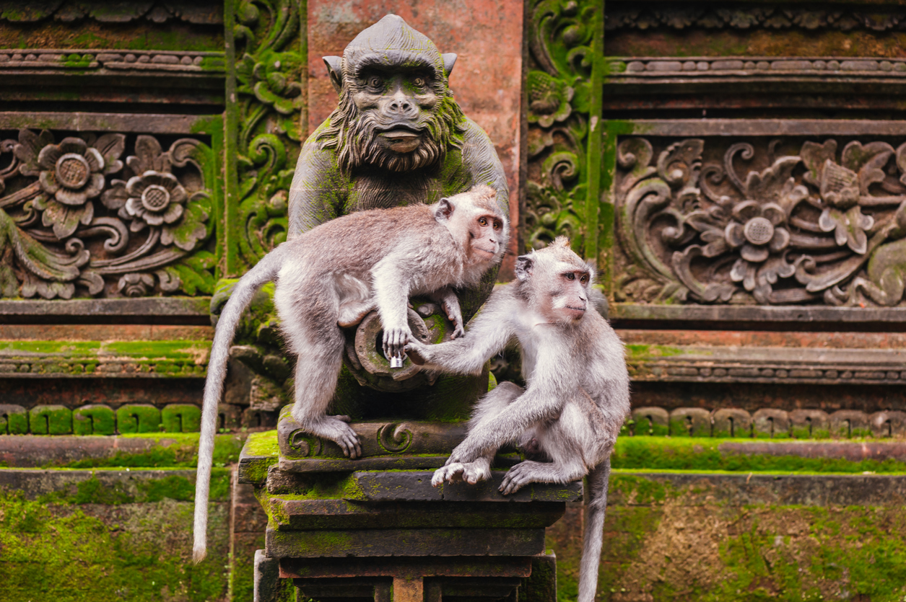
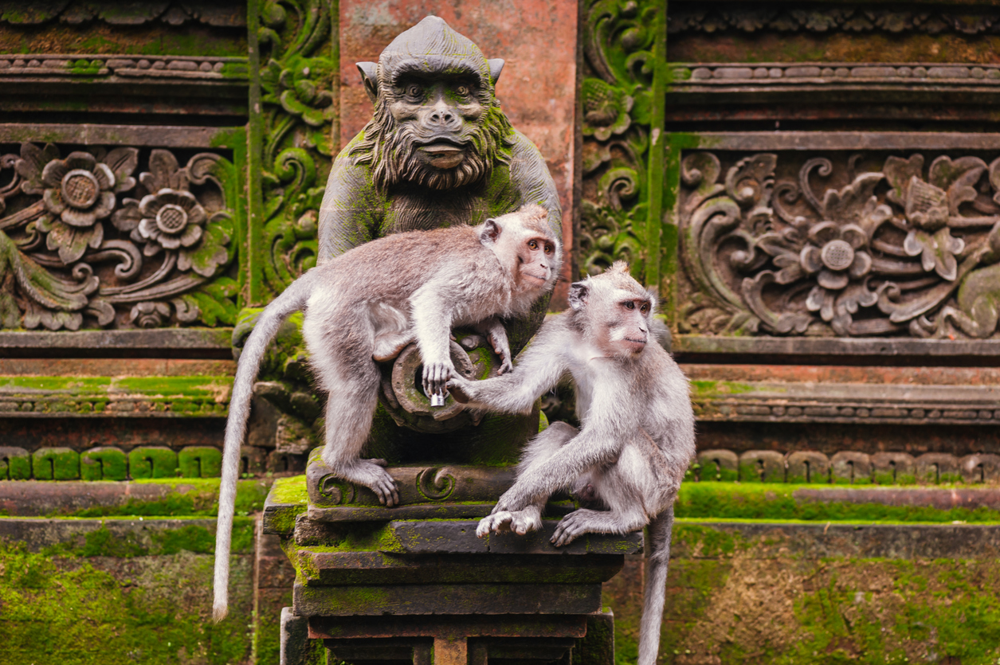

Bali
Bali on trooppinen paratiisi Indonesiassa, joka tunnetaan kauniista rannoistaan, temppeleistään, surffauksesta ja henkisestä hyvinvoinnista.
Sijainti kartalla
Bali – trooppinen paratiisi täynnä elämää ja rauhaa. Balilla voit nauttia auringosta upeilla hiekkarannoilla, tutustua värikkääseen kulttuuriin temppeleissä ja viidakoissa, sekä rauhoittua joogaretriitissä tai seikkailla riisiterasseilla. Tämä Indonesian helmi tarjoaa unohtumattomia elämyksiä niin rentoutujille kuin seikkailijoillekin.
Näkymiä Balilta
 
